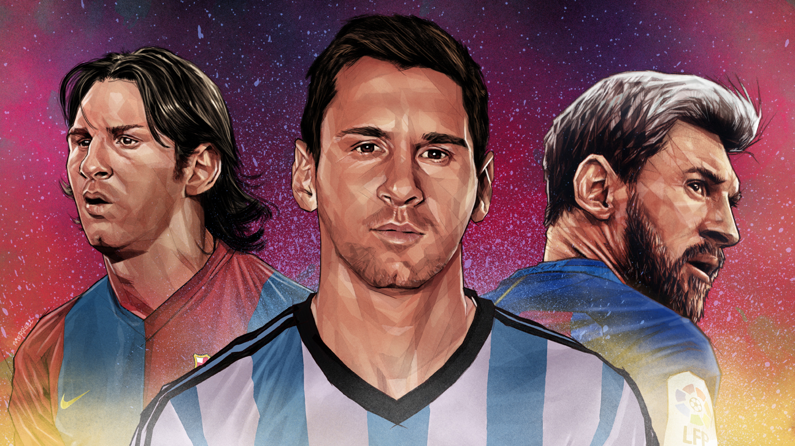

170cm의 작은 키임에도 불구하고 현재 아르헨티나를 대표하는 축구선수이며 스페인 프로축구 1부리그 프리메라 디비시온에 소속되어있는 FC 바르셀로나의 주장이다.
2004년 10월 16일, 그는 RCD 에스파뇰과의 경기에 출전함으로써 첫 번째 리그 경기에 출장했다. 이것은 그가 17세 114일 째 되는 날이었는데, 이로써 그는 바르셀로나에서 뛰었던 역사상 세 번째로 어린 선수가 되었고, 프리메라리가에 출전한 가장 어린 선수가 되었다. (이 기록은 팀 동료인 보얀 크르키치에 의해 2007년 9월 경신되었다) 그가 바르셀로나에서 기록한 최초의 1군 경기 골은 2005년 5월 1일 알바세테와의 경기에서 터졌으며 이 골은 팀 동료였던 호나우지뉴가 어시스트했다. 그 당시 메시는 17세 10개월 7일의 나이였고, 이것은 라 리가에서 득점한 바르셀로나 선수 중 가장 어린 나이였다. (이 기록은 역시 2007년 보얀에 의해 다시 깨졌다. 보얀의 그 골은 메시가 어시스트 한 것이었다)